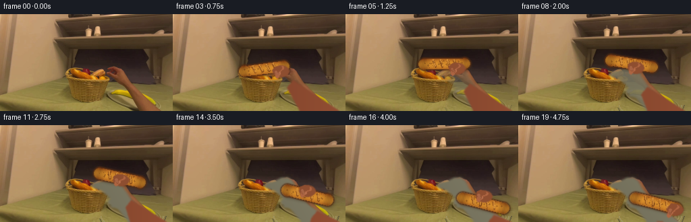
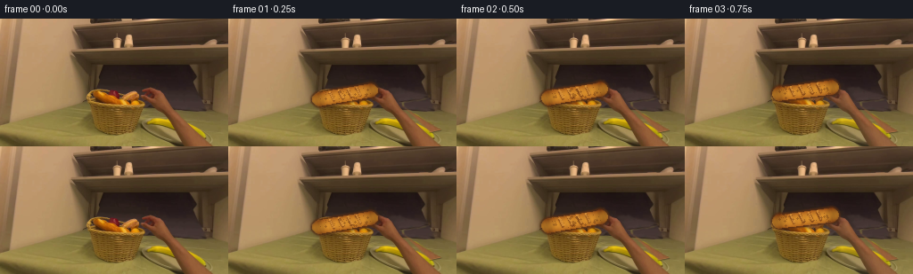
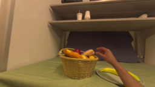
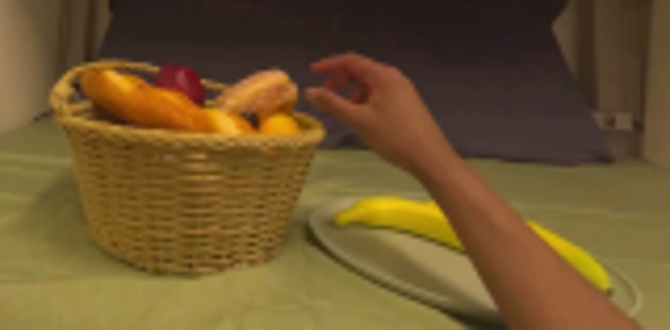
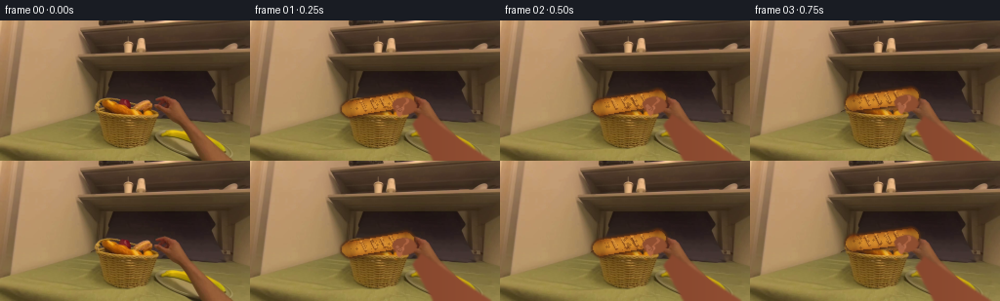
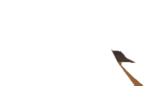
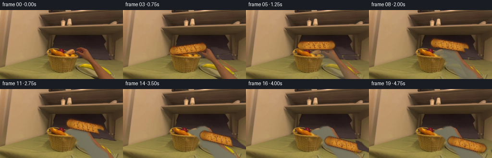
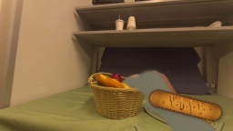

CODING AGENTS AS PIXEL WORLD MODELS
traex/GPT-5.6-Sol · common50_0018
点击播放 · 原生 RGB 像素
逐轮保存的候选
回放视频、检查图与代码变化。
每份候选均可单独播放。实际图片检查记录在下方工具轨迹中。
候选 01播放与检查图
点击播放 · 原生 RGB 像素

展开代码变化
--- 上一保存版本
+++ 本次保存版本
@@ -0,0 +1,191 @@
+from pathlib import Path
+import numpy as np
+import cv2
+from PIL import Image, ImageDraw, ImageFilter
+import artifact_io
+
+ROOT=Path(__file__).resolve().parent
+SRC=np.array(Image.open(ROOT/'first_frame.png').convert('RGB'))
+H,W=SRC.shape[:2]
+
+def ease(x):
+ x=np.clip(x,0,1); return x*x*(3-2*x)
+
+def qbez(p0,p1,p2,t):
+ return (1-t)**2*np.array(p0)+2*(1-t)*t*np.array(p1)+t*t*np.array(p2)
+
+def poly_mask(points, blur=1.0):
+ m=Image.new('L',(W,H),0); ImageDraw.Draw(m).polygon([tuple(map(float,p)) for p in points],fill=255)
+ if blur: m=m.filter(ImageFilter.GaussianBlur(blur))
+ return np.array(m,dtype=np.float32)/255
+
+def ell_mask(box, blur=.8):
+ m=Image.new('L',(W,H),0); ImageDraw.Draw(m).ellipse(tuple(map(float,box)),fill=255)
+ if blur: m=m.filter(ImageFilter.GaussianBlur(blur))
+ return np.array(m,dtype=np.float32)/255
+
+def blend(im, layer, mask):
+ return np.clip(im*(1-mask[...,None])+layer*mask[...,None],0,255)
+
+def fill_region(im, mask, color, noise=0):
+ layer=np.zeros_like(im,dtype=np.float32); layer[:]=color
+ if noise:
+ yy,xx=np.mgrid[:H,:W]; n=(np.sin(xx*.47+yy*.23)*.5+.5)*noise-noise/2
+ layer+=n[...,None]
+ return blend(im,layer,mask)
+
+def capsule_mask(a,b,r1,r2=None,blur=.8):
+ if r2 is None:r2=r1
+ a=np.array(a,float);b=np.array(b,float); v=b-a; L=np.linalg.norm(v); n=np.array([-v[1],v[0]])/(L+1e-6)
+ pts=[a+n*r1,b+n*r2,b-n*r2,a-n*r1]
+ m=poly_mask(pts,0)
+ m=np.maximum(m,ell_mask((a[0]-r1,a[1]-r1,a[0]+r1,a[1]+r1),0))
+ m=np.maximum(m,ell_mask((b[0]-r2,b[1]-r2,b[0]+r2,b[1]+r2),0))
+ if blur: m=np.array(Image.fromarray(np.uint8(m*255)).filter(ImageFilter.GaussianBlur(blur)),float)/255
+ return m
+
+def make_clean_plate():
+ """Remove the initial forearm/hand and banana to reveal a plausible empty plate."""
+ im=SRC.astype(float)
+ # localized plate: overwrite only the object silhouettes, retaining the original rim elsewhere
+ # hand/arm silhouette from source (kept conservative around basket)
+ armpts=[(152,82),(160,78),(169,77),(177,82),(181,91),(190,104),(200,119),(213,136),(220,144),
+ (191,144),(181,132),(171,119),(161,106),(151,98),(143,95),(135,91),(139,85)]
+ m=poly_mask(armpts,1.5)
+ # plate interior approximation under arm
+ yy,xx=np.mgrid[:H,:W]
+ cx,cy=193,122
+ # smooth grey-beige with subtle edge-aware gradient
+ col=np.zeros_like(im); shade=113+0.11*(xx-150)-.06*(yy-115)
+ col[...,0]=shade*1.03; col[...,1]=shade; col[...,2]=shade*.82
+ im=blend(im,col,m)
+ # erase banana on plate, approximate underlying plate interior
+ ban=poly_mask([(159,113),(165,108),(177,107),(190,111),(203,120),(220,131),(233,139),(238,144),(216,144),(202,136),(190,129),(176,124),(166,122)],1.5)
+ im=blend(im,col,ban)
+ # re-establish plate inner shading and lower/right rim, only where obscured
+ rimcol=(137,137,113)
+ # partial rim arcs drawn on transparent layer
+ lay=Image.fromarray(np.uint8(np.clip(im,0,255))).convert('RGB'); d=ImageDraw.Draw(lay,'RGBA')
+ d.arc((146,101,246,163),5,168,fill=(65,63,51,130),width=2)
+ d.arc((148,103,243,158),8,172,fill=(168,166,132,95),width=2)
+ # avoid drawing over basket by limiting x
+ arr=np.array(lay,float)
+ return arr
+
+CLEAN=make_clean_plate()
+
+def bread_layer(im, center, angle, scale=1.0, held=True):
+ """Render a long golden-brown baguette, shaded and textured."""
+ cx,cy=center; L=61*scale; r=8.2*scale
+ th=np.deg2rad(angle); v=np.array([np.cos(th),np.sin(th)]); n=np.array([-v[1],v[0]])
+ a=np.array(center)-v*L/2; b=np.array(center)+v*L/2
+ # Contact shadow
+ sm=capsule_mask(a+np.array([2.5,3]),b+np.array([2.5,3]),r*1.03,blur=2.2)
+ shadow=np.zeros_like(im); shadow[:]=(54,42,27)
+ im=blend(im,shadow,sm*.34)
+ m=capsule_mask(a,b,r,blur=.65)
+ yy,xx=np.mgrid[:H,:W]; rel=(xx-cx)*n[0]+(yy-cy)*n[1]
+ axial=((xx-cx)*v[0]+(yy-cy)*v[1])/(L/2)
+ # warm crust, cylindrical highlight and dark ends
+ hi=np.clip(1-(rel/(r+1))**2,0,1)
+ end=np.clip((np.abs(axial)-.68)/.32,0,1)
+ grain=3*np.sin(xx*.83+yy*.39)+2*np.sin(xx*1.71-yy*.62)
+ R=158+55*hi-45*end+grain; G=82+58*hi-32*end+grain*.5; B=25+18*hi-10*end
+ layer=np.stack([R,G,B],2)
+ im=blend(im,layer,m)
+ # crust outline
+ edge=np.clip(cv2.GaussianBlur(m,(0,0),1.25)-cv2.GaussianBlur(m,(0,0),.25),0,1)*4
+ out=np.zeros_like(im);out[:]=(86,44,18);im=blend(im,out,np.clip(edge,0,.75))
+ # diagonal scoring cuts
+ for s in [-.48,-.13,.22,.55]:
+ p=np.array(center)+v*(s*L/2)
+ p1=p-n*r*.58-v*r*.25; p2=p+n*r*.48+v*r*.10
+ mm=capsule_mask(p1,p2,max(1,1.25*scale),blur=.55)
+ dark=np.zeros_like(im); dark[:]=(105,48,17); im=blend(im,dark,mm*.7)
+ hl=capsule_mask(p1-n*1.2,p2-n*1.2,max(.55,.7*scale),blur=.45)
+ pale=np.zeros_like(im);pale[:]=(239,166,66); im=blend(im,pale,hl*.7)
+ # tiny toasted speckles
+ rng=np.random.default_rng(321)
+ speck=np.zeros((H,W),np.float32)
+ for _ in range(45):
+ x=int(cx+rng.uniform(-L/2,L/2)*v[0]+rng.uniform(-r*.65,r*.65)*n[0]); y=int(cy+rng.uniform(-L/2,L/2)*v[1]+rng.uniform(-r*.65,r*.65)*n[1])
+ if 0<=x<W and 0<=y<H and m[y,x]>.8: cv2.circle(speck,(x,y),rng.choice([0,0,1]),.35,-1)
+ toasted=np.zeros_like(im);toasted[:]=(91,43,15); im=blend(im,toasted,speck)
+ return im,(a,b,r)
+
+def arm_hand(im,wrist,palm,grip_angle,grip=1.0,release=False):
+ """Articulated right forearm, palm and five fingers pinching/releasing the loaf."""
+ wrist=np.array(wrist,float); palm=np.array(palm,float)
+ skin=(142,78,48); light=(174,101,66); dark=(92,49,34)
+ # forearm tapered from offscreen lower-right
+ v=wrist-np.array([236,154.]); n=np.array([-v[1],v[0]])/(np.linalg.norm(v)+1e-5)
+ armpts=[np.array([238,154])+n*13,wrist+n*7.0,wrist-n*7.0,np.array([207,154])-n*12]
+ am=poly_mask(armpts,1.05)
+ yy,xx=np.mgrid[:H,:W]; shade=np.clip((xx-120)/140,0,1)
+ lay=np.empty_like(im); lay[...,0]=130+17*shade;lay[...,1]=68+11*shade;lay[...,2]=44+7*shade
+ im=blend(im,lay,am)
+ # palm/back of hand
+ pm=ell_mask((palm[0]-11,palm[1]-8,palm[0]+13,palm[1]+9),.8)
+ lay[:]=skin;im=blend(im,lay,pm)
+ # fingers aligned near loaf; index and middle curl over far side
+ th=np.deg2rad(grip_angle); lv=np.array([np.cos(th),np.sin(th)]); nn=np.array([-lv[1],lv[0]])
+ # thumb under/near side, curved as two segments
+ thumbroot=palm+np.array([-4,1]); thumbtip=palm-lv*5+nn*(8 if not release else 12)
+ for a,b,r in [(thumbroot,(thumbroot+thumbtip)/2,3.0),((thumbroot+thumbtip)/2,thumbtip,2.5)]:
+ mm=capsule_mask(a,b,r,blur=.6); lay[:]=light; im=blend(im,lay,mm)
+ # four fingers from knuckles toward loaf, spread more upon release
+ spread=5 if not release else 9
+ for j,(along,baseoff,length) in enumerate([(4,-5,14),(1,-1,16),(-2,3,14),(-5,7,11)]):
+ root=palm+lv*along-nn*(4+j*.4)
+ tip=root-lv*(length*.28)+nn*(length*(.52 if not release else .70))+lv*((j-1.5)*spread*.22)
+ mid=(root+tip)/2-lv*(3 if not release else 1)
+ rr=2.3 if j<2 else 2.0
+ mm=np.maximum(capsule_mask(root,mid,rr,blur=.55),capsule_mask(mid,tip,rr*.82,blur=.5))
+ lay[:]=skin if j else light; im=blend(im,lay,mm)
+ # nail highlight at tip
+ nm=ell_mask((tip[0]-1.7,tip[1]-1.25,tip[0]+1.7,tip[1]+1.25),.45); lay[:]=(189,119,86); im=blend(im,lay,nm*.55)
+ # soft arm edge shadow
+ return im
+
+def frame(i):
+ if i==0:return SRC.copy()
+ # Start close to exact frame; crossfade object-cleaning over first pickup phase.
+ if i<=10:
+ t=ease((i-1)/9)
+ else:t=1
+ base=SRC.astype(float)*(1-t)+CLEAN*t
+ # tiny egocentric exposure breathing, no whole-image camera warp
+ base=np.clip(base*(1+0.006*np.sin(i*.55)),0,255)
+ if i<=10:
+ u=ease((i-1)/9)
+ # loaf lifts out of basket toward center-right
+ c=qbez((131,86),(148,65),(174,76),u)
+ ang=-10+22*u
+ sc=0.96+0.05*u
+ base,geom=bread_layer(base,c,ang,sc)
+ wrist=qbez((171,101),(184,112),(188,115),u)
+ palm=qbez((157,87),(165,77),(176,80),u)
+ base=arm_hand(base,wrist,palm,ang,1,False)
+ elif i<=16:
+ u=ease((i-10)/6)
+ # carry and lower bread to empty grey plate
+ c=qbez((174,76),(198,92),(204,116),u)
+ ang=12+2*u
+ base,geom=bread_layer(base,c,ang,1.01)
+ wrist=qbez((188,115),(205,127),(216,139),u)
+ palm=qbez((176,80),(195,91),(204,105),u)
+ base=arm_hand(base,wrist,palm,ang,1,False)
+ else:
+ # bread remains resting on plate while fingers open and hand withdraws
+ c=(204,116);ang=14
+ base,geom=bread_layer(base,c,ang,1.01)
+ u=ease((i-16)/3)
+ wrist=qbez((216,139),(226,145),(242,153),u)
+ palm=qbez((204,105),(215,111),(231,125),u)
+ base=arm_hand(base,wrist,palm,ang,1,True)
+ return np.uint8(np.clip(base,0,255))
+
+frames=np.stack([frame(i) for i in range(20)])
+# hard contract guarantee
+frames[0]=SRC
+artifact_io.save(frames,ROOT)
候选 02播放与检查图
点击播放 · 原生 RGB 像素


展开代码变化
--- 上一保存版本
+++ 本次保存版本
@@ -147,6 +147,32 @@
# soft arm edge shadow
return im
+def natural_hand(im,wrist,palm,grip_angle,release=False):
+ """Move the photographed source hand with a gentle affine warp.
+ This preserves natural skin texture, anatomy and illumination from frame zero.
+ """
+ hsv=cv2.cvtColor(SRC,cv2.COLOR_RGB2HSV)
+ m=((hsv[...,0]<18)&(hsv[...,1]>65)&(hsv[...,2]>55)).astype(np.uint8)*255
+ gate=np.zeros((H,W),np.uint8)
+ cv2.fillPoly(gate,[np.array([(132,76),(182,73),(199,105),(225,144),(256,144),(256,113),(207,91),(183,73)],np.int32)],255)
+ m=cv2.bitwise_and(m,gate)
+ m=cv2.morphologyEx(m,cv2.MORPH_CLOSE,np.ones((5,5),np.uint8))
+ # Source hand center/palm is about (164,88), with forearm extending down right.
+ srcp=np.array([164.,88.]); dst=np.array(palm,float)
+ ang=grip_angle-2
+ ca,sa=np.cos(np.deg2rad(ang)),np.sin(np.deg2rad(ang))
+ A=np.array([[ca,-sa],[sa,ca]])
+ # mild scale follows depth, but remain close to source anatomy
+ sc=.98 if not release else .95
+ M=np.zeros((2,3),float);M[:2,:2]=A*sc;M[:,2]=dst-A.dot(srcp)*sc
+ warped=cv2.warpAffine(SRC,M,(W,H),flags=cv2.INTER_CUBIC,borderMode=cv2.BORDER_CONSTANT)
+ wm=cv2.warpAffine(m,M,(W,H),flags=cv2.INTER_LINEAR,borderMode=cv2.BORDER_CONSTANT)
+ wm=cv2.GaussianBlur(wm,(0,0),.75).astype(float)/255
+ if release:
+ # As the hand opens/withdraws, use only the increasingly faint natural hand.
+ wm*=.88
+ return blend(im,warped,wm)
+
def frame(i):
if i==0:return SRC.copy()
# Start close to exact frame; crossfade object-cleaning over first pickup phase.
@@ -165,7 +191,7 @@
base,geom=bread_layer(base,c,ang,sc)
wrist=qbez((171,101),(184,112),(188,115),u)
palm=qbez((157,87),(165,77),(176,80),u)
- base=arm_hand(base,wrist,palm,ang,1,False)
+ base=natural_hand(base,wrist,palm,ang,False)
elif i<=16:
u=ease((i-10)/6)
# carry and lower bread to empty grey plate
@@ -174,7 +200,7 @@
base,geom=bread_layer(base,c,ang,1.01)
wrist=qbez((188,115),(205,127),(216,139),u)
palm=qbez((176,80),(195,91),(204,105),u)
- base=arm_hand(base,wrist,palm,ang,1,False)
+ base=natural_hand(base,wrist,palm,ang,False)
else:
# bread remains resting on plate while fingers open and hand withdraws
c=(204,116);ang=14
@@ -182,7 +208,7 @@
u=ease((i-16)/3)
wrist=qbez((216,139),(226,145),(242,153),u)
palm=qbez((204,105),(215,111),(231,125),u)
- base=arm_hand(base,wrist,palm,ang,1,True)
+ base=natural_hand(base,wrist,palm,ang,True)
return np.uint8(np.clip(base,0,255))
frames=np.stack([frame(i) for i in range(20)])
候选 03播放与检查图
点击播放 · 原生 RGB 像素
展开代码变化
--- 上一保存版本
+++ 本次保存版本
@@ -147,7 +147,7 @@
# soft arm edge shadow
return im
-def natural_hand(im,wrist,palm,grip_angle,release=False):
+def natural_hand(im,wrist,palm,grip_angle,release=False,fade=1.0):
"""Move the photographed source hand with a gentle affine warp.
This preserves natural skin texture, anatomy and illumination from frame zero.
"""
@@ -168,9 +168,7 @@
warped=cv2.warpAffine(SRC,M,(W,H),flags=cv2.INTER_CUBIC,borderMode=cv2.BORDER_CONSTANT)
wm=cv2.warpAffine(m,M,(W,H),flags=cv2.INTER_LINEAR,borderMode=cv2.BORDER_CONSTANT)
wm=cv2.GaussianBlur(wm,(0,0),.75).astype(float)/255
- if release:
- # As the hand opens/withdraws, use only the increasingly faint natural hand.
- wm*=.88
+ wm*=fade
return blend(im,warped,wm)
def frame(i):
@@ -208,7 +206,7 @@
u=ease((i-16)/3)
wrist=qbez((216,139),(226,145),(242,153),u)
palm=qbez((204,105),(215,111),(231,125),u)
- base=natural_hand(base,wrist,palm,ang,True)
+ base=natural_hand(base,wrist,palm,ang,True,1-u)
return np.uint8(np.clip(base,0,255))
frames=np.stack([frame(i) for i in range(20)])
可观测工具轨迹
实际执行的命令与返回图片。
命令 1exit 0
/bin/bash -lc "cat GENERATION_RULES.md && printf '\\n---PROMPT---\\n' && cat prompt.txt"
命令 2exit 0
/bin/bash -lc "find . -maxdepth 2 -type f -printf '%p %s bytes\\n' | sort"
命令 3exit 0
/bin/bash -lc "python3 - <<'PY'
from PIL import Image
im=Image.open('first_frame.png')
print(im.size, im.mode)
PY
which ffmpeg || true
python3 - <<'PY'
mods=['cv2','numpy','PIL','imageio','torch']
for m in mods:
try:
x=__import__(m); print(m,'OK',getattr(x,'__version__',''))
except Exception as e: print(m,'ERR',e)
PY"命令 4exit 0
/bin/bash -lc "cat task_spec.json; sed -n '1,240p' artifact_io.py"
命令 5exit 0
/bin/bash -lc "python3 - <<'PY'
from PIL import Image
im=Image.open('first_frame.png')
im.crop((85,65,245,144)).resize((960,474)).save('crop.png')
PY"命令 6exit 0
/bin/bash -lc "python3 - <<'PY'
from PIL import Image
import numpy as np, cv2
im=np.array(Image.open('first_frame.png'))
pts=[(170,82),(175,87),(185,100),(200,125),(215,140),(160,86),(150,80),(135,87),(180,115),(172,102),(165,97)]
hsv=cv2.cvtColor(im,cv2.COLOR_RGB2HSV)
for x,y in pts: print((x,y),im[y,x],hsv[y,x])
PY"命令 7exit 0
/bin/bash -lc "cat > generate.py <<'PY'
from pathlib import Path
import numpy as np
import cv2
from PIL import Image, ImageDraw, ImageFilter
import artifact_io
ROOT=Path(__file__).resolve().parent
SRC=np.array(Image.open(ROOT/'first_frame.png').convert('RGB'))
H,W=SRC.shape[:2]
def ease(x):
x=np.clip(x,0,1); return x*x*(3-2*x)
def qbez(p0,p1,p2,t):
return (1-t)**2*np.array(p0)+2*(1-t)*t*np.array(p1)+t*t*np.array(p2)
def poly_mask(points, blur=1.0):
m=Image.new('L',(W,H),0); ImageDraw.Draw(m).polygon([tuple(map(float,p)) for p in points],fill=255)
if blur: m=m.filter(ImageFilter.GaussianBlur(blur))
return np.array(m,dtype=np.float32)/255
def ell_mask(box, blur=.8):
m=Image.new('L',(W,H),0); ImageDraw.Draw(m).ellipse(tuple(map(float,box)),fill=255)
if blur: m=m.filter(ImageFilter.GaussianBlur(blur))
return np.array(m,dtype=np.float32)/255
def blend(im, layer, mask):
return np.clip(im*(1-mask[...,None])+layer*mask[...,None],0,255)
def fill_region(im, mask, color, noise=0):
layer=np.zeros_like(im,dtype=np.float32); layer[:]=color
if noise:
yy,xx=np.mgrid[:H,:W]; n=(np.sin(xx*.47+yy*.23)*.5+.5)*noise-noise/2
layer+=n[...,None]
return blend(im,layer,mask)
def capsule_mask(a,b,r1,r2=None,blur=.8):
if r2 is None:r2=r1
a=np.array(a,float);b=np.array(b,float); v=b-a; L=np.linalg.norm(v); n=np.array([-v[1],v[0]])/(L+1e-6)
pts=[a+n*r1,b+n*r2,b-n*r2,a-n*r1]
m=poly_mask(pts,0)
m=np.maximum(m,ell_mask((a[0]-r1,a[1]-r1,a[0]+r1,a[1]+r1),0))
m=np.maximum(m,ell_mask((b[0]-r2,b[1]-r2,b[0]+r2,b[1]+r2),0))
if blur: m=np.array(Image.fromarray(np.uint8(m*255)).filter(ImageFilter.GaussianBlur(blur)),float)/255
return m
def make_clean_plate():
\"\"\"Remove the initial forearm/hand and banana to reveal a plausible empty plate.\"\"\"
im=SRC.astype(float)
# localized plate: overwrite only the object silhouettes, retaining the original rim elsewhere
# hand/arm silhouette from source (kept conservative around basket)
armpts=[(152,82),(160,78),(169,77),(177,82),(181,91),(190,104),(200,119),(213,136),(220,144),
(191,144),(181,132),(171,119),(161,106),(151,98),(143,95),(135,91),(139,85)]
m=poly_mask(armpts,1.5)
# plate interior approximation under arm
yy,xx=np.mgrid[:H,:W]
cx,cy=193,122
# smooth grey-beige with subtle edge-aware gradient
col=np.zeros_like(im); shade=113+0.11*(xx-150)-.06*(yy-115)
col[...,0]=shade*1.03; col[...,1]=shade; col[...,2]=shade*.82
im=blend(im,col,m)
# erase banana on plate, approximate underlying plate interior
ban=poly_mask([(159,113),(165,108),(177,107),(190,111),(203,120),(220,131),(233,139),(238,144),(216,144),(202,136),(190,129),(176,124),(166,122)],1.5)
im=blend(im,col,ban)
# re-establish plate inner shading and lower/right rim, only where obscured
rimcol=(137,137,113)
# partial rim arcs drawn on transparent layer
lay=Image.fromarray(np.uint8(np.clip(im,0,255))).convert('RGB'); d=ImageDraw.Draw(lay,'RGBA')
d.arc((146,101,246,163),5,168,fill=(65,63,51,130),width=2)
d.arc((148,103,243,158),8,172,fill=(168,166,132,95),width=2)
# avoid drawing over basket by limiting x
arr=np.array(lay,float)
return arr
CLEAN=make_clean_plate()
def bread_layer(im, center, angle, scale=1.0, held=True):
\"\"\"Render a long golden-brown baguette, shaded and textured.\"\"\"
cx,cy=center; L=61*scale; r=8.2*scale
th=np.deg2rad(angle); v=np.array([np.cos(th),np.sin(th)]); n=np.array([-v[1],v[0]])
a=np.array(center)-v*L/2; b=np.array(center)+v*L/2
# Contact shadow
sm=capsule_mask(a+np.array([2.5,3]),b+np.array([2.5,3]),r*1.03,blur=2.2)
shadow=np.zeros_like(im); shadow[:]=(54,42,27)
im=blend(im,shadow,sm*.34)
m=capsule_mask(a,b,r,blur=.65)
yy,xx=np.mgrid[:H,:W]; rel=(xx-cx)*n[0]+(yy-cy)*n[1]
axial=((xx-cx)*v[0]+(yy-cy)*v[1])/(L/2)
# warm crust, cylindrical highlight and dark ends
hi=np.clip(1-(rel/(r+1))**2,0,1)
end=np.clip((np.abs(axial)-.68)/.32,0,1)
grain=3*np.sin(xx*.83+yy*.39)+2*np.sin(xx*1.71-yy*.62)
R=158+55*hi-45*end+grain; G=82+58*hi-32*end+grain*.5; B=25+18*hi-10*end
layer=np.stack([R,G,B],2)
im=blend(im,layer,m)
# crust outline
edge=np.clip(cv2.GaussianBlur(m,(0,0),1.25)-cv2.GaussianBlur(m,(0,0),.25),0,1)*4
out=np.zeros_like(im);out[:]=(86,44,18);im=blend(im,out,np.clip(edge,0,.75))
# diagonal scoring cuts
for s in [-.48,-.13,.22,.55]:
p=np.array(center)+v*(s*L/2)
p1=p-n*r*.58-v*r*.25; p2=p+n*r*.48+v*r*.10
mm=capsule_mask(p1,p2,max(1,1.25*scale),blur=.55)
dark=np.zeros_like(im); dark[:]=(105,48,17); im=blend(im,dark,mm*.7)
hl=capsule_mask(p1-n*1.2,p2-n*1.2,max(.55,.7*scale),blur=.45)
pale=np.zeros_like(im);pale[:]=(239,166,66); im=blend(im,pale,hl*.7)
# tiny toasted speckles
rng=np.random.default_rng(321)
speck=np.zeros((H,W),np.float32)
for _ in range(45):
x=int(cx+rng.uniform(-L/2,L/2)*v[0]+rng.uniform(-r*.65,r*.65)*n[0]); y=int(cy+rng.uniform(-L/2,L/2)*v[1]+rng.uniform(-r*.65,r*.65)*n[1])
if 0<=x<W and 0<=y<H and m[y,x]>.8: cv2.circle(speck,(x,y),rng.choice([0,0,1]),.35,-1)
toasted=np.zeros_like(im);toasted[:]=(91,43,15); im=blend(im,toasted,speck)
return im,(a,b,r)
def arm_hand(im,wrist,palm,grip_angle,grip=1.0,release=False):
\"\"\"Articulated right forearm, palm and five fingers pinching/releasing the loaf.\"\"\"
wrist=np.array(wrist,float); palm=np.array(palm,float)
skin=(142,78,48); light=(174,101,66); dark=(92,49,34)
# forearm tapered from offscreen lower-right
v=wrist-np.array([236,154.]); n=np.array([-v[1],v[0]])/(np.linalg.norm(v)+1e-5)
armpts=[np.array([238,154])+n*13,wrist+n*7.0,wrist-n*7.0,np.array([207,154])-n*12]
am=poly_mask(armpts,1.05)
yy,xx=np.mgrid[:H,:W]; shade=np.clip((xx-120)/140,0,1)
lay=np.empty_like(im); lay[...,0]=130+17*shade;lay[...,1]=68+11*shade;lay[...,2]=44+7*shade
im=blend(im,lay,am)
# palm/back of hand
pm=ell_mask((palm[0]-11,palm[1]-8,palm[0]+13,palm[1]+9),.8)
lay[:]=skin;im=blend(im,lay,pm)
# fingers aligned near loaf; index and middle curl over far side
th=np.deg2rad(grip_angle); lv=np.array([np.cos(th),np.sin(th)]); nn=np.array([-lv[1],lv[0]])
# thumb under/near side, curved as two segments
thumbroot=palm+np.array([-4,1]); thumbtip=palm-lv*5+nn*(8 if not release else 12)
for a,b,r in [(thumbroot,(thumbroot+thumbtip)/2,3.0),((thumbroot+thumbtip)/2,thumbtip,2.5)]:
mm=capsule_mask(a,b,r,blur=.6); lay[:]=light; im=blend(im,lay,mm)
# four fingers from knuckles toward loaf, spread more upon release
spread=5 if not release else 9
for j,(along,baseoff,length) in enumerate([(4,-5,14),(1,-1,16),(-2,3,14),(-5,7,11)]):
root=palm+lv*along-nn*(4+j*.4)
tip=root-lv*(length*.28)+nn*(length*(.52 if not release else .70))+lv*((j-1.5)*spread*.22)
mid=(root+tip)/2-lv*(3 if not release else 1)
rr=2.3 if j<2 else 2.0
mm=np.maximum(capsule_mask(root,mid,rr,blur=.55),capsule_mask(mid,tip,rr*.82,blur=.5))
lay[:]=skin if j else light; im=blend(im,lay,mm)
# nail highlight at tip
nm=ell_mask((tip[0]-1.7,tip[1]-1.25,tip[0]+1.7,tip[1]+1.25),.45); lay[:]=(189,119,86); im=blend(im,lay,nm*.55)
# soft arm edge shadow
return im
def frame(i):
if i==0:return SRC.copy()
# Start close to exact frame; crossfade object-cleaning over first pickup phase.
if i<=10:
t=ease((i-1)/9)
else:t=1
base=SRC.astype(float)*(1-t)+CLEAN*t
# tiny egocentric exposure breathing, no whole-image camera warp
base=np.clip(base*(1+0.006*np.sin(i*.55)),0,255)
if i<=10:
u=ease((i-1)/9)
# loaf lifts out of basket toward center-right
c=qbez((131,86),(148,65),(174,76),u)
ang=-10+22*u
sc=0.96+0.05*u
base,geom=bread_layer(base,c,ang,sc)
wrist=qbez((171,101),(184,112),(188,115),u)
palm=qbez((157,87),(165,77),(176,80),u)
base=arm_hand(base,wrist,palm,ang,1,False)
elif i<=16:
u=ease((i-10)/6)
# carry and lower bread to empty grey plate
c=qbez((174,76),(198,92),(204,116),u)
ang=12+2*u
base,geom=bread_layer(base,c,ang,1.01)
wrist=qbez((188,115),(205,127),(216,139),u)
palm=qbez((176,80),(195,91),(204,105),u)
base=arm_hand(base,wrist,palm,ang,1,False)
else:
# bread remains resting on plate while fingers open and hand withdraws
c=(204,116);ang=14
base,geom=bread_layer(base,c,ang,1.01)
u=ease((i-16)/3)
wrist=qbez((216,139),(226,145),(242,153),u)
palm=qbez((204,105),(215,111),(231,125),u)
base=arm_hand(base,wrist,palm,ang,1,True)
return np.uint8(np.clip(base,0,255))
frames=np.stack([frame(i) for i in range(20)])
# hard contract guarantee
frames[0]=SRC
artifact_io.save(frames,ROOT)
PY
python3 generate.py"命令 8exit 0
/bin/bash -lc "python3 - <<'PY'
import cv2,numpy as np
from PIL import Image
im=np.array(Image.open('first_frame.png'))
h=cv2.cvtColor(im,cv2.COLOR_RGB2HSV)
mask=((h[:,:,0]<18)&(h[:,:,1]>65)&(h[:,:,2]>55)).astype(np.uint8)*255
poly=np.zeros(mask.shape,np.uint8); cv2.fillPoly(poly,[np.array([(132,77),(181,75),(197,106),(224,144),(256,144),(256,120),(211,98),(190,75)],np.int32)],255)
mask &= poly
mask=cv2.morphologyEx(mask,cv2.MORPH_CLOSE,np.ones((5,5),np.uint8))
mask=cv2.GaussianBlur(mask,(0,0),.8)
rgba=np.dstack([im,mask]); Image.fromarray(rgba).save('handmask.png')
PY"命令 9exit 0
/bin/bash -lc 'python3 generate.py'
命令 10exit 0
/bin/bash -lc "python3 generate.py && python3 - <<'PY'
import numpy as np
from PIL import Image
z=np.load('pixels.npz')['pixels']
assert z.shape==(144,256,20)
a=np.array(Image.open('first_frame.png')).astype(np.uint32)
p=(a[:,:,0]<<16)|(a[:,:,1]<<8)|a[:,:,2]
assert np.array_equal(z[:,:,0],p)
for i in range(20):
im=Image.open(f'frames/{i:02d}.png'); assert im.mode=='RGB' and im.size==(256,144)
print('validated',z.shape,z.dtype,'first_exact',np.array_equal(z[:,:,0],p))
PY
ls -lh pixels.npz index.html inspection.png generate.py"视觉工具实际返回图片 1

视觉工具实际返回图片 2

视觉工具实际返回图片 3

视觉工具实际返回图片 4

视觉工具实际返回图片 5

视觉工具实际返回图片 6

视觉工具实际返回图片 7
视觉工具实际返回图片 8

保存候选 3 份；完成命令 10 次；可验证图片返回 8 张。原始 API 响应与完整日志保留在本地。